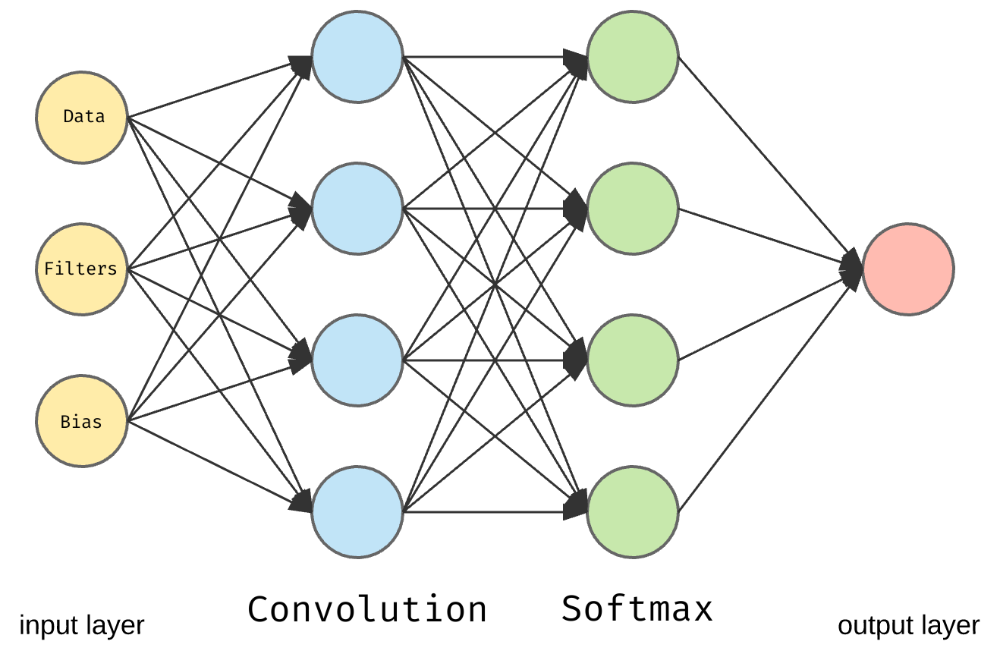
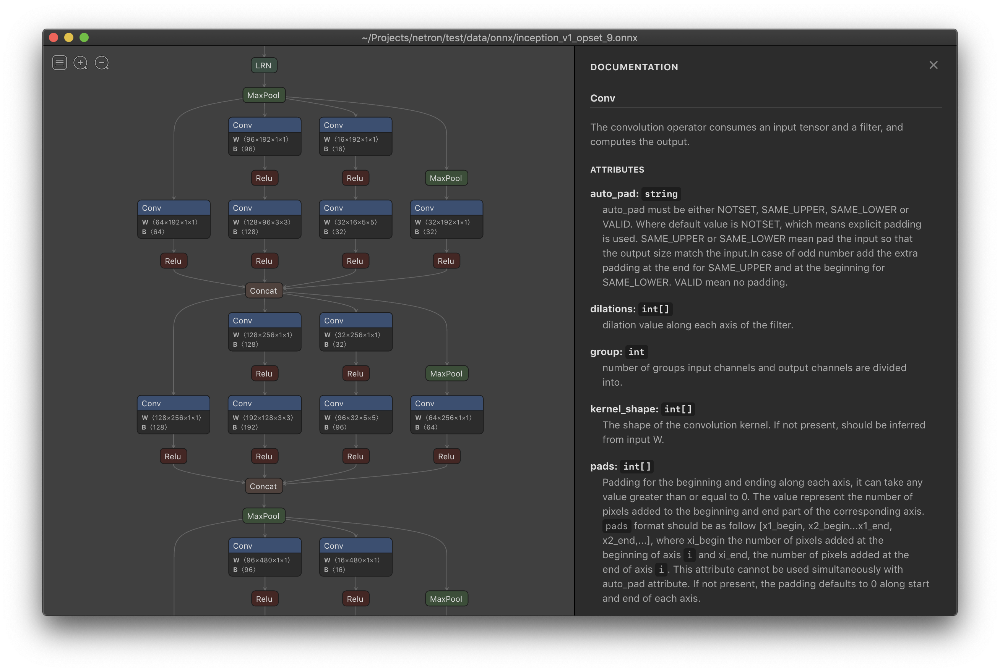

nGraph
Tomasz Dołbniak
3camp #61
Gdańsk 2020
 nGraph
nGraph
 ONNX
ONNX
tomasz-dolbniak tomdol
od strony technicznej
- biblioteka
 w środku
w środku API w pythonie
API w pythonie
funkcjonalnie
- kompilator modeli/grafów
- optymalizator
- akcelerator - nawet 45x
- runtime dla modeli DL
nGraph
- nGraph nie jest frameworkiem
- nie służy do budowania modeli
- C++ & python API
- nGraph - backend / engine
Modele DL

towardsdatascience.com/converting-a-simple-deep-learning-model-from-pytorch-to-tensorflow
Modele DL
towardsdatascience.com/converting-a-simple-deep-learning-model-from-pytorch-to-tensorflow


lutzroeder/netron